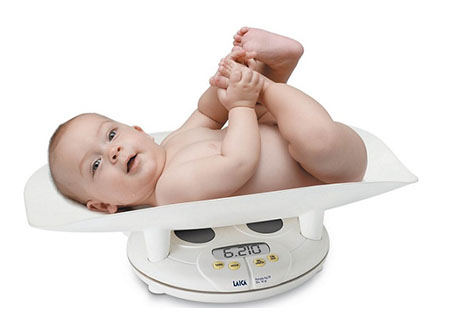
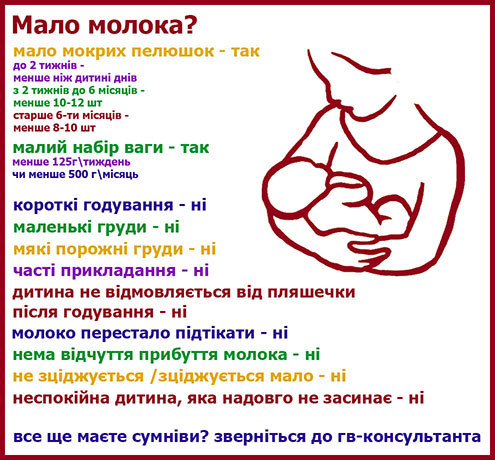

Мало молока
Напевне найчастіше, що турбує маму під час годування грудьми: «Чи вистачає моєму малюку молока?»
Це питання актуальне і одразу після пологів, і в місяць, і в три, і в пів року.
Які ситуації викликають у мами такі думки?
- Я не відчуваю наповненості грудей
- Я не можу нічого зцідити після годування (або зціджую дуже мало)
- Дитина постійно висить на грудях
- Дитина нервується під час годування
- Дитина мало спить
- Зважування до та після годування показують невеликий приріст ваги
- Молоко блакитне, прозоре, пісне, нежирне
- Після суміші дитина заспокоюється, засинає
Справжні причини, чому молока може не вистачати:
- Травма міжхребцевих 4-5 хребців ( при порушенні інервації лактація неможлива)
- Синдром Шихана (крововилив в гіпофіз під час пологів)
- Недорозвинуті молочні залози (гіпоплазія)
- Оперативні втручання на молочній залозі, коли розріз йшов через сосок та пошкодив протоки
- Рубці на молочній залозі (опіки, дитячі травми, оперований мастит)
- Захврювання щитовидної залози
- Гіпертонія під час вагітності
- Полікістоз яйників
Зазначу, що категорично не вийде годувати лише в перших двох випадках. Всі решта мають великі шанси.
Також завжди треба брати до уваги потребу мами в лікуванні. Є препарати, які знижують кількість утвореного молока. Це препарати, які мають дію протилежну до гормонів лактації.
- Оральні контрацептиви (естрогени, в меншій мірі гестагени)
- Каберголін (Достінекс) та бромкриптин (Парлодел)
- Сечогінні препарати
- Антигістамінні препарати (протиалергічні 1,2 покоління)
- Судинозвужуючі (катехоламіни, ефедрин)

Які можуть бути причини, чому дитина не зможе «наїсти» собі достатньо молока:
- Неправильне прикладання
- Годування по режиму
- Відсутність нічних годувань
- Наявність дурника, пляшки, накладки
- Раннє введення прикорму, води, чаю і т.д.
То ж, як все таки визначити, чи вашій дитині вистачає молока? Для цього є лише дві ознаки:
- Набір ваги мінімум 125г\тиждень чи 500 г\місяць
- Тест мокрих пелюшок (ТМП). Для дитини до 2 тижнів нормою є стільки скільки їй днів, з 2 тижнів до 6-ти місяців – 10-12 МП,старше 6-ти місяців – 8-10 МП.
Якщо по вищевказаних ознаках у вас проблем немає, ви можете не хвилюватися, вашій дитинці вистачає молока.

То чому ж у вас виникають питання? Давайте розберемо кожне з них.
Я не відчуваю наповненості грудей. Так, з часом лактація встановлюється на рівні, який потребує малюк і тому мама вже не відчуває переповненості грудей, так як це було в перший місяць-два після пологів. Вітаємо, у вас встановилася зріла лактація.
Я не можу нічого зцідити після годування (або зціджую дуже мало).Ніхто і ніщо не зможе добути краще молоко з грудей ніж малюк. Так природою закладено, що рот малюка найкраще стимулює груди для вироблення та вивільнення молока. Часто мами, в яких малюки набирають більше ніж кілограм в місяць, не можуть зцідити ні краплі. На жаль (чи на щастя) руками чи молоковідсмоктувачем треба ще вміти добути молоко з грудей. Просто дайте можливість робити це малюку.
Дитина постійно висить на грудях. Діти, народжені з захищеного маминого живота, потребують притулку та заспокоєння від емоцій та знань отриманих в цьому великому та незвичному світі. Грудне вигодовування – це не лише їжа. Це і психологічний розвиток дитини. Такими зависаннями дитина заспокоюється та забезпечує собі достатню кількість молока. Не відмовляйте їй в цьому.
Дитина нервується під час годування. Часто, особливо ввечері, дитина відчуває дискомфорт під час годування. Можливо її турбують коліки ( фізіологічне дозрівання нервової та травної системи), можливо нові емоції. Просто вселіть їй відчуття спокою та впевненості в материнській любові і все налагодиться.
Дитина мало спить. Так закладено природою, що діти мають короткі проміжки сну, для забезпечення своєї безпеки. Діти на штучному вигодовуванні сплять міцніше через те, що суміш є штучною та важкозасвоюваною речовиною, для всмоктування потрібно багато енергії, яка накопичується під час сну. Старайтесь відпочивати разом з малюком.
Зважування до та після годування показують невеликий приріст ваги. Такий метод давно вже спростували матусі, яким було цікаво проводити експерименти. Годуючи дитину з чашечки наприклад 50 мл молока, набір ваги щоразу показував різні цифри. Від +100 до -20 гр. Так само і ми, випивши 1 літр води, не станемо важчі на кілограм. Обмін речовин в організмі проходить не за принципом посуду: «Скільки налив – стільки і отримав». Зважуйте не частіше ніж один раз в тиждень, в один і то й же час, голим, на тій самій вазі.
Молоко блакитне, прозоре, пісне, нежирне. Це найважливіший пункт. Ваше молоко є найцінніше, найсмачніше та саме таке, як потрібно вашій дитині в даний момент. Якщо спостерігати за складом молока однієї мами протягом дня, то він буде щоразу змінюватися так, як потребує цього малюк. Тому не хвилюйтесь і годуйте грудьми. Це Богом дане благословення для вашої дитини.